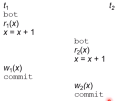
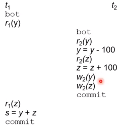
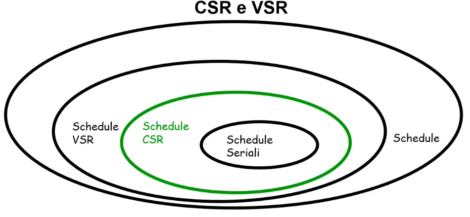
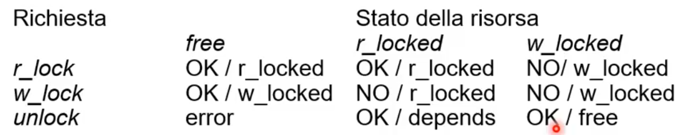
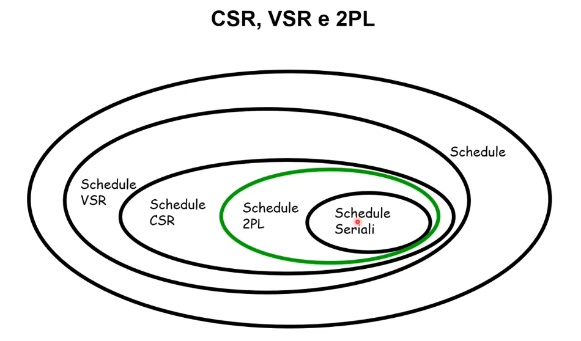

Supponiamo di avere due transazioni identiche t1 e t2 che incrementano un certo valore x di 1. Supponiamo che il valore di x iniziale è 2.
Se le due transazioni fossero eseguite serialmente otterremo x=4. Lo stesso risultato deve essere garantito nel caso in cui le transazioni sono eseguite in maniera concorrente.
Non è difficile pensare ad una situazione in cui senza controllo della concorrenza l'esecuzione delle transazioni dia un risultato non consistente.
La cosa che notiamo è che il begin della t2 inizia prima della scrittura della t1. In altre parole, quando inizia t2 x=2 perchè non sono state salvate le modifiche della t1. Alla fine avremo come risultato finale x=3.
Quindi senza un controllo delle concorrenze otteniamo un risultato errato.
Questo problema si chiama perdita di aggiornamento
In questo caso la t2 legge il valore scritto dalla t1, ma la t2 finisce con un abort. Quello che succede è che la t2 legge in realtà un valore intermedio.
Alla fine avremo un valore di x=4 che non è corretto.
Assumiamo ci sia un vincolo di integrità y+z=1000.
s=1100, il vincolo sembra non essere soddisfatto. In realtà quello che succede è che la t1 legge un valore di y che è non aggiornato in base alle azioni fatte dalla t2.
In questo caso anche se l'inserimento c'è stato dalla t2, per la t1 è come se non fosse mai successo, perchè legge i valori prima dell'inzio della t2.
Possiamo sintetizzare queste anomalie in:
Il gestore della concorrenza si occupa proprio di evitare queste anomalie.
Uno schedule è una sequenza di operazioni i i/o di transazioni concorrenti.
Per ogni schedule consideriamo una commit-proiezione e ignoriamo le transazioni che vnno in abort, rimuovendo tutte le loro azioni dallo schedule.
Quindi per ogni schedule consideriamo solo transazioni andate a buon fine.
Il commit in uno schedule viene fatto li dove troviamo una write (w).
Uno scheduler è un sistema che accetta,rifiuta o riordina le operazioni richieste dalle transazioni. Uno scheduler deve in stream (realtime).
Uno è un insieme di transazioni in modo che queste siano separate ed eseguite una alla volta, ad esempio:
$$S_2:r_1(x)r_1(z)w_1(x)r_2(z)w_2(z)$$Uno schedule serializzabile produce lo stesso risultato di uno schedule seriale sulle stesse transazioni. In altre parole si tratta di uno schedule che produce esattamente lo stesso risultato, prese le stesse transazioni, di uno schedule seriale. Per dire che uno schedule è equivalente ad un altro schedule, abbiamo necessità di una nozione di equivalenza tra schedule.
L'idea è quella di trovare delle classi di schedule serializzabili e la cui serializzabilità sia verificabile a basso costo in modo da poter essere fatto realtime dalla base di dati.
Vediamo alcune definizioni preliminari:
In altre parole diciamo che una transizione i sull'oggetto x legge-da una scrittura della transizione j sempre su x in uno schedule S se la scrittura di j precede la lettura di i in S e non c'è una transizione k tra $r_i(x)$ e $w_j(x)$.
Notiamo prima d tutto che S4 è seriale.
Analizziamo S3:
Analizziamo S4:
Visto che S3 ed S4 hanno le stesse relazioni legge-da e le stesse scritture finali allora sono view-equivalenti.
S3 è view-serializzabile perchè view-equivalente a S4 che è seriale.
Determinare la verifica della view-equivalenza dati due schedule è un'operazione polinomiale. Determinare invece la View-serializzabilità di uno schedule è un problema np-completo non attuabile in realtà.
In altre parole se ci viene dato uno schedule è inconveniente capire se è view-serializzabile. è possibile trovare alcune pratiche per mitigare il problema (conflict-serializzabilità).
Vediamo alcune definizioni preliminari:
Ogni schedule conflict-serializzabile è view-serializzabile non vale necessariamente il viceversa.
Come conseguenza abbiamo che:
è possibile verificare la conflict-serializzabilità per mezzo del grafo dei conflitti, formato da:
Uno schedule è in CSR se e solo se il grado dei conflitti è aciclico
Con il grafo dei conflitti è per cui possibile verificare la conflict-serializzabilità in teoria ma non in pratica infatti serve un meccanismo che possa controllare questo aspetto in maniera incrementale. Per conoscere il grafo dei conflitti dobbiamo invece conoscere a priori tutte le transazioni a priori. Inoltre, abbiamo considerato l'ipotesi della commit-proiezione che risulta non realistica per il funzionamento di una base di dati, dove le transazioni potrebbero anche subire un abort.
Per la gestione della concorrenza nelle transazioni, le basi di dati utilizzano i lock gestiti dal lock manager. La tabella riassume il comportamento e tipi di lock possibili.
Lanciando una richiesta di unlock, se lo stato della risorsa è r_locked, il risultato dipenderà dal valore di un contatore (depends). Il contatore tiene conto del numero di "lettori"; la risorsa è rilasciata quando il contatore scende a zero. In pratica una risorsa che subisce richiesta di unlock viene liberata quando il numero di "lettori" è zero.
Se la risorsa non è concessa, la transazione richiedente è posta in attesa in una coda fino a quando non diventa disponibile la risorsa.
Il lock manager gestisce una tabella dei lock per tenere in memoria la situazione attuale.
La maggior parte dei database usa locking a due fasi (2PL), un sistema di locking che garantisce conflict-serializzabilità per le transazioni. Questo sistema è basato su due regole:
Inoltre, ogni schedule 2PL è anche conflict-serializzabile, ma non vale il viceversa.
Controesempio per la non necessità
$$r_1(x)w_1(x)r_2(x)w_2(x)r_3(y)w_1(y)$$L'esempio è una transazione conflict-serializzabile ma non valida per il 2PL, infatti notiamo che una volta rilasciato il lock per la prima transazione (in $w_1(x)$) questa richiede ancora un nuovo lock (in $w_1(y)$) e per il 2PL Una transazione dopo aver rilasciato un lock non può acquisirne altri.
Il locking a due fasi stretto è una condizione aggiuntiva che molte basi di dati aggiungono secondo il quale i lock possono essere rilasciati solo dopo il commit o abort. Questa condizione supera la necessità dell'ipotesi di commit-proiezione.
Un problema relativo al 2PL è il deadlock, cioè due transazioni detengono ciascuna una risorsa e aspettano la risorsa detenuta dall'altra.
Esempio
Dato lo schedule:
r_lock1(x), r_lock2(y), read1(x), read2(y), w_lock1(y), w_lock2(x)
In ordine:
Quindi la transazione 1 è in attesa della transazione 2, ma la transazione 2 è bloccata perchè in attesa dalla transazione 1.
Si tratta di una situazione di stallo che necessità di un intervento esterno. Ci sono tre possibili tecniche:
In SQL possiamo definire:
La perdita di aggiornamento per tutte le tipologie è sempre evitata.
La modalità repeatable read è quella standard in SQL.
Si ha sempre la condizione di 2PL stretto per i lock in scrittura.
Per le altre tipologie:
Per alcuni engine tipo MyISAM non esiste alcun supporto per transazioni e lock.
Inoltre in MySql è possibile stabilire dei savepoint, per dare la possibilità di effettuare rollback al savepoint senza far iniziare nuovamente la transazione.
La clausola FOR UPDATE stabilisce un lock esclusivo (w_lock) su tutte le righe lette che impedirà ad altri utenti di leggere le stesse righe fino al termine della nostra transazione.
SELECT...FOR UPDATE;
Esiste anche la clausola LOCK IN SHARE MODE che stabilisce invece un lock condiviso (r_lock) e che impedisce solo gli aggiornamenti, garantendoci che il contenuto della riga rimarrà invariato per la durata della transazione.
SELECT...LOCK IN SHARE MODE;
è possibile specificare un livello di isolamento a livello di transazione.
c:\> mysqlId --transaction-isolation=livello
Altrimenti inline con la definizione della transazione e quindi:
SELECT SET [GLOBAL|SESSION] TRANSACTION ISOLATION LEVEL {READ UNCOMITTED | READ COMMITED | REPEATABLE READ | SERIALIZABLE}